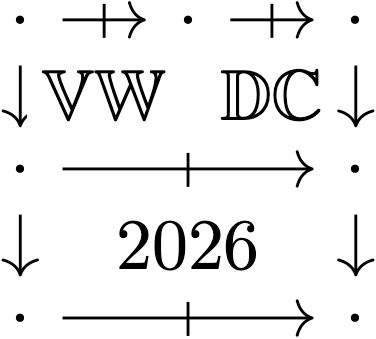

Registration
If you would like to attend the workshop then please sign up using the registration form below so that we can email you with a Zoom link closer to the date.
Participant registration
The goal of the workshop is to bring together researchers to share recent work on double categories and their applications to domains such as computer science, type theory, applied category theory, and higher category theory. The workshop will be open for everyone to attend online, with recordings of the talks being uploaded after the workshop is finished.
The workshop will hopefully be of interest to both those who are new to double categories and want to learn about the fundamental techniques and viewpoints, and also to domain specialists who are interested in technical results and current topics of active research. We also hope that this workshop will create a snapshot of the research area as it currently stands together with directions for future work, as well as provide an invitation to people wanting to know more about the area, or who are wondering if the tools or ideas in double category theory might be useful to their own research.
This workshop is organised by Bryce Clarke and Tim Hosgood.
All times below are in UTC.
You can also view the researchseminars.org schedule which should show the times in your local time zone.
| Thursday 5th November | Friday 6th | Tuesday 10th | Wednesday 11th |
|---|---|---|---|
| 20:00 Nelson Niu | 16:00 Maru Sarazola | 12:00 Matt Earnshaw | 08:00 Maxine Calle |
| 20:45 Edward Morehouse | 16:45 Aaron David Fairbanks | 12:45 Bojana Femić | 08:45 Yuto Kawase |
| 21:30 Bryce Goldman | 17:30 Alexander Kurz | 13:30 Robin Jourde | 09:30 Sarah Dukic |
| 22:15 Michael Lambert | 18:15 Claudio Pisani | 14:15 Jana Nickel | 10:15 Theofilos Tsantilas |
| 15:00 Hayato Nasu |
While applications for double categories and proarrow equipments abound in formal category theory, categorical systems theory, and beyond, their Yoneda theory had only ever been developed for representable functors specifying tight arrows, by Paré. This is because in general, there is no ordinary representable double functor out of a (weak) double category: loose arrows would need to be sent to tight arrows (functors), while tight arrows would need to be sent to loose ones (profunctors). In recent work, Lambert, Myers, and Patterson resolve this issue by introducing twisted double functors, precisely the structure needed for a loose Hom functor. We review this construction before presenting our Yoneda lemma and embedding for these twisted representables out of double categories when they have proarrow equipments. This material is ongoing joint work with Lambert and Patterson.
We introduce dinatural transformations for double categories and show that they enjoy several of the same properties as dinatural transformations for 1-categories, including subsuming ordinary natural transformations, composing with them, and composing with one another in a suitably groupoidal setting. As an application, we show how extranatural transformations for 1-categories can be characterized using dinatural transformations in the double category of small categories.
Like familiar theories of first-order logic, the theories of many categorical logics can be specified by a finite presentation of generating symbols and axioms. Each categorical logic is parameterized by a "virtual double theory", a kind of virtual equipment, which can be used to construct type theories over their models. This is especially useful in software systems based on categorical logic, such as CatColab, where models of various domain-specific logics are supported by type systems built uniformly from these virtual double theories. Building on prior work by Hayato Nasu on a type theory for virtual double categories, we introduce foundations for a programming language for specifying virtual double theories, and present a prototype compiler.
The introduction of right adjoints to substitution in the equipment structure of a double olog allows modeling of relational division, an advanced query used in relational databases, for example, to compare a shopping list against an inventory. This talk with review relational division and show how it can be captured using these right adjoints in double-categorical database schemas. Asking for these adjoints enriches these structures in other ways. For example, such double ologs model full first-order modal logic, and thus description logic, and allow compound database queries involving disjunction, implication and negation. Beck-Chevalley and Frobenius Reciprocity are automatically satisfied in any such database schema and can be seen to be query optimization rules that are thus provably error-free.
For any finite group G, there is a well-known formula that computes the algebraic K-theory of the category of finite G-sets; i.e. finite sets with a G-action. Interestingly, if we drop the existence of inverses and swap G by a monoid M, things get a lot more complicated and each step in the proof independently breaks down!
In this talk, I will explain how we can save the day by considering a double category of M-sets instead. Along the way, I will try to outline some recent developments in algebraic K-theory that make heavy use of double categories.
The talk won't assume any knowledge of K-theory, and will only assume a working understanding of what a double category is.
Double categories are typically weak in one direction: the horizontal (or "loose") 1-cells compose weakly associatively as in a bicategory (a.k.a. weak 2-category), whereas the vertical (or "tight") 1-cells compose strictly associatively as in a strict 2-category. There have been various attempts to define double categories with weakly associative composition in both directions. This is desirable in order to capture a broader range of examples, as well as to obtain a more symmetric theory. What is puzzling is that trying to straightforwardly generalize the usual definition leads into deadlock around coherence conditions.
We introduce a surprisingly easy definition that involves no coherence conditions. It arises as the double-categorical analogue of a surprisingly easy definition of bicategory that involves no coherence conditions. We then connect this definition to other definitions that are more analogous to the usual definition of bicategory. In particular we show our doubly weak double categories are equivalent to Verity's double bicategories satisfying a mild condition that already appears in the literature, and they are equivalent to Garner's cubical bicategories satisfying a similar condition. Joint work with Michael Shulman.
We investigate how to systematically construct continuous dualities from zero-dimensional dualities, employing well-known methods from algebra, topology, category theory, and domain theory. While our method is general, this paper focusses on the move from Stone spaces to compact Hausdorff spaces and the move from Priestley spaces to compact ordered Hausdorff spaces. The engine of our approach is Stone duality for relations: on the space side quotienting by a preorder turns zero-dimensional spaces into continuous ones, while distributive lattices with a proximity relation are their algebraic duals. Our duality for relations is inherently order-enriched. Double categories organise both functional and relational morphism in the same structure. The move from zero-dimensional to continuous dualities is then a three-step construction: extend a duality from functional to relational morphism, split idempotents, restrict to maps.
The main trust of the unbiased approach to algebra is that operations on a set X form a category whose objects are (finite) families I → X and are indexed by functions I → J. Furthermore, operations can be reindexed along pullbacks in finite sets.
This inevitably leads to the notion of unbiased symmetric multicategory [1]: a double category M with parallel sums, along with a sum-preserving double functor M → Pb (to the double category of pullback squares in finite sets) which is a discrete fibration in the tight direction. The loose arrows of M should be thought of as the abstract operations of the algebraic theory, while tight arrows and cells give reindexing.
Operads are the single-sorted theories, namely those M with just an object over a terminal set. If S is a species of structure in the sense of Joyal, an S-function is a function endowed with an S-structure on each of its fibers. For many basic species, S-functions can be naturally composed, so that they form the operations of an operad; in fact all operads arise in this way.
An algebra for M is itself a symmetric multicategory A with a double functor A → M which is a discrete opfibration in the loose direction. The loose arrows of A are the (concrete) operations of the algebra, indexed by the abstract operations in M. For instance, an algebra for the terminal operad Pb → Pb is (the unbiased form of) a commutative monoid X: a concrete operation evaluates a family I → X along a function I → J (the underlaying abstract operation) to give a family J →X. The algebras for the operad Tot, associated to the species of total orders, are plain monoids: operations evaluate families along functions with totally ordered fibers.
It is well-known that operads (or more generally symmetric multicategories) do not capture all kinds of ordinary algebraic theories since, roughly, one cannot duplicate or delete variables. To this end one introduces cartesian multicategories, which have a very neat definition in the present context. Namely, they are the algebras for a natural monad cart on symmetric multicategories: the loose arrows of cart M are spans (actually, "enhanced" spans [1]) formed by a tight arrow and a loose arrow in M. These are composed in the usual way for spans, except that we use M-cells in place of pullbacks. Thus, a cartesian structure cart M → M provides a way to "sum" an operation along a function to give a new operation.
Multicategories which are both cartesian and cocartesian (a.k.a. sequential [2]) amount to categories enriched in commutative monoids. In particular, cartesian and cocartesian operads amount to rigs. In the operad associated to a rig R, an operation α over a function I → J, is a family I → R, and composition is given by multiplication in the underlying monoid (as in the discrete distribution monad). The sum of α along f : I → K is obtained by adding the elements in the fibers of f.
Algebras for a cartesian operad M are required to satisfy a further compatibility condition, corresponding to the fact that they can be seen as morphisms of cart-algebras from M to the endomorphism operad End(X). The algebras for the cartesian operad associated to a rig R are the R-modules. For an operad M, the free M-algebra monad is given again by spans in M but, in a sense, dually to cart. If M is cartesian, free M-algebras are obtained by quotienting with respect to a natural equivalence on spans. Similarly, given N → M, the relatively free M-algebras are obtained by quotienting spans in M. We also illustrate the connections between cartesian operads and Lawvere theories.
The overall purpose of the talk is to show how the unbiased approach, by avoiding the awkwardness which inevitably arises from an unnatural skeletal indexing, turns out to be rather effective and opens up new perspectives.
[1] C. Pisani, Unbiased multicategory theory, Theory and Applications of Categories 44 (2025), 826–868.
[2] C. Pisani, Sequential multicategories, Theory and Applications of Categories 29 (2014), 496–541.
A multicategory has morphisms whose domains are lists of objects. A generalized multicategory has morphisms whose domains have a shape specified by a monad T. Representability concerns the equivalence between structure defined by universal property, and structure defined coherently: classically, this is Hermida’s equivalence between representable multicategories and monoidal categories. The theory of representability for generalized multicategories allow us to capture many results of this general shape. Seen through the lens of double category theory, to ask when a T-multicategory is representable is to ask when it is the underlying loose T-coalgebra of a pseudo-T-algebra. This talk will introduce the basic theory, such as the monadic adjunction between T-algebras and T-multicategories. This is based on work-in-progress with Nathanael Arkor.
The Para construction is an important concept in Computer Science. Taking it as motivation, we carried out a purely categorical study in the following direction.
We introduce Para and coPara double categories for double categories, extending the construction from [1] carried out for 1-categories. The latter uses actegories over monoidal categories, while we use a horizontal action of a horizontally monoidal double category M on a double category D. Our main result is the following.
For horizontally monoidal double categories M and D with a horizontal lax action F (of M on D) such that M is horizontally double braided, we prove that the following are equivalent: 1. there is a structure of a lax monoidal horizontal lax action, 2. there is a structure of a bistrong and commutative horizontal lax action, 3. there is a purely central horizontally premonoidal structure on \(\mathrm{coPara}_M(D)\) (with trivial 2-cells (u,U) ), 4. there is a horizontally monoidal structure on \(\mathrm{coPara}_M(D)\) extending that on D.
As it occurs in the Kleisli construction, the "parametric" 1-cells must live in the loose direction. For this reason in the above structures the horizontal (our loose) direction appears. As a matter of fact, the coPara construction generalizes the Kleisli construction in the same lines as an action of a monoidal (double) category generalizes a (double) monad. Shulman [5] has introduced the notion of a monoidal double category via vertical (tight) monoidality transformations, so that assuming existence of companions (for the tight 1-cell components of those transformations) one retrieves a monoidal bicategory out of the latter, at a much lower price than one would have expected. In [2] we studied the relation between premonoidal and monoidal structures on a double category, where we introduced the notion of a premonoidal double category using the vertical direction, too. For the purpose of the equivalence of 3. and 4, above we introduced both notions in the horizontal sense and have also studied under which companion-lifting assumptions vertical structures yield the corresponding horizontal ones. The equivalence of 1., 2. and 4. is our extension to double categories of a bicategorical result from [4]. The implication 1.=> 4. truncated to 1-categories was concluded in [1] via a fully different approach. We also give an overview of the lifting of vertical to horizontal structures from the perspective of llocally cubical bicategories from [3].
[1] M. Capucci, D. Jaz Myers, "Contextads as Wreaths; Kleisli, Para, and Span Constructions as Wreath Products", preprint.
[2] B. Femić, "Kleisli and premonoidal double categories", Mathematical Structures in Computer Science.
[3] R. Garner, N. Gurski, "The low-dimensional structures formed by tricategories".
[4] H. Paquet, P. Saville, "Effectful semantics in 2-dimensional categories: strong, commutative, and concurrent pseudomonads", LICS '24: Proceedings of the 39th Annual ACM/IEEE Symposium on Logic in Computer Science Article 61, 1 - 15.
[5] M. Shulman, "Constructing symmetric monoidal bicategories".
We study virtual double theories, which are a virtual-double-categorical extension of Lawvere theories, allowing for the interpretation of some morphisms as relations. We first prove that the category of models of any virtual double theory is locally presentable. We then introduce a notion of presentation for virtual double theories, analogous to the notion of presentation of a Lawvere theory by generators and relations. Finally, we apply these results to design a mathematical foundation for skeletal semantics, a software framework for specifying and analysing programming languages. We show that skeletal specifications may be interpreted as presentations of virtual double theories, so that the category of models of the virtual double theory associated to any presentation provides the intended language with initial algebra semantics.
The talk is based on a project joint with Nathanael Arkor. We lay the foundations for a coend calculus in the framework of virtual double categories. To this end, we establish the concept of a transpose-closed virtual equipment and introduce the notion of a coend for tight arrows. The goal is to develop a coend calculus for transpose-closed virtual equipments in a similar manner as the calculus of ends for categories enriched over the bicategory of spans in a topos due to Betti and Walters (“The calculus of ends over a base topos”, JPAA, 1989) and to recover some prominent results, such as the Fubini theorem for coends. To cite an example, we will consider the virtual equipment Span(E) of spans in an ordinary category E with pullbacks and describe a transpose-closed structure on it.
The double category of relations is one of the most beloved examples of double categories, with many variations, such as frame-valued relations and relations with respect to different kinds of monomorphisms (the right class of a factorization system). Such double categories are systematically captured by Shulman's Fr construction, which produces a double category of relations internal to a certain class of monoidal fibrations.
In this talk, I will present a generalization of this construction that produces a virtual double category of relations, where loose morphisms are not required to compose. I will also give a characterization of the class of fibrations called elementary existential fibrations as those for which the induced virtual double category is a cartesian equipment. In fact, these fibrations and cartesian equipments with one additional assumption form biequivalent 2-categories. If time permits, I will discuss a further generalization of this construction that captures more than binary relations, which is ongoing joint work with Aaron Fairbanks.
Given two manifolds M and N, one can ask whether it is possible to cut M up into pieces and reassemble them to obtain N. This “cut-and-paste” (SK) relation fits into the framework of scissors congruence K-theory, which is an extension of higher algebraic K-theory to more general settings. In this talk, we will discuss a new model for the cut-and-paste K-theory of manifolds and analyze its properties. Along the way, we will highlight how double categorical techniques may be applied to scissors congruence K-theory more generally. This talk is based on joint work with Maru Sarazola.
In this talk, I will introduce a new notion of double-categorical colimits and use it to characterize virtual double categories of enriched categories, functors, and profunctors. These colimits have a property analogous to the effectiveness of equivalence relations, which plays a crucial role in reconstructing enriched categories in the characterization. This talk is based on my recent paper.
In this talk, we present a formal theory of coalgebras, formulated internally in a double category. Our primary goal is to instantiate this to the enriched setting, providing a general theory of enriched coalgebras. To this end, we characterise categories of coalgebras abstractly as universal objects in double categories, adapting Kelly’s 2-categorical notion of inserters to double categories by instantiating them in the underlying morphism 2-category. A major advantage of this double-categorical formulation is that it allows us to prove that coalgebra objects inherit weighted colimits from the base category, without the assumption of cartesian closedness. Our main result is that coalgebra objects are given functorially by a limit-preserving double functor, which comes equipped with a natural projection which creates weighted colimits. We will apply these results by instantiating them to several enriched settings, study coalgebras in the double category of fibrations, and work towards a framework for coalgebraic logic internal to double categories.
Restriction categories were introduced by Cockett and Lack as a framework where one could study the notion of "partially defined" maps in a systematic way. In this talk, which is based on ongoing work with Nathanael Arkor, Yorgo Chamoun, Bryce Clarke, Vit Jelinek and Hayato Nasu and was initiated as a project in the 2026 Adjoint School, we will define restriction categories and see how these were seen as categories enriched in a (weak) double category by Cockett and Garner. Furthermore, we shall present how this viewpoint could be extended to an equivalence of double categories and what new prospects could this entail.